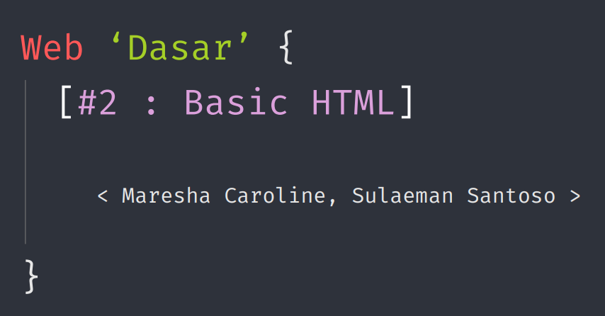

Materi oleh: Maresha Caroline

HTML singkatan dari Hyper-Text Markup Language.HTML bukanlah bahasa pemrograman, melainkan dokumen khusus di mana jika kita mengetikkan kata khusus(tag) yang diapit dengan '<' dan '>', browser akan membuat elemen web. HTML bersifat non case-sensitive.
Dalam web, tedapat dua metode utama:
1. Client Side: Berjalan di klien, kode dapat diakses pengguna. Contoh: HTML, CSS Javascript.
2. Server Side: Berjalan di server, kode tidak dapat diakses pengguna. Contoh: PHP, NodeJS, Ruby, Go.
Contoh Formatting Teks Tambahan:
- Strikethrough :Teks salah ini dicoret
- Subscript : Rumus air adalah H2O
- Superscript : Luas persegi adalah S2
© 2572029 - Angela Cindy Wijaya